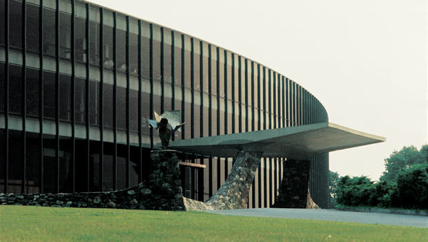
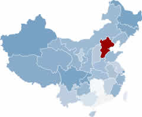

Basic Information
Name: Max Haifei Li / 李海飞
Date of Birth: 1969-03-31
Birthplace: Xinhua County, Hunan Province, China
Workplace: Computer Science Department,
Union University
1050 Union University Dr, Jackson, TN 38305 USA
Pearls of Life by Dr. Ming Wang
Academic degrees:
| Degree | Year | Academic Institution |
| Doctoral Degree, Computer Science | 2001 | University of Florida |
| Master's Degree, Computer and Electrical Engineering | 1998 | University of Florida |
| Bachelor's Degree, Computer Science | 1990 | Xi'an Jiaotong University |
Spring 2018
| Monday | Tuesday | Wednesday | Thursday | Friday |
| 10am to 11 am Reserved | 9:25am to 10:40am CSC-105-3 Survey of Microcomputing Applications PAC C-1 | 10am to 11 am Reserved | 9:25am to 10:40am CSC-105-3 Survey of Microcomputing Applications PAC C-1 | 10am to 11 am Reserved |
| 11am to 12pm Office Hour | 11am to 12pm Office Hour | |||
| 12pm to 12:50pm Office Hour | CSC-235-1 (Computer Ethics) 12:15PM-1:30PM PAC C-13 | 12pm to 12:50pm Office Hour | CSC-235-1 (Computer Ethics) 12:15PM-1:30PM PAC C-13 | |
| CSC-105-1 (Survey of Microcomputing Apps) 1PM-1:50PM PAC C-1 | CSC-220-1 Computer Repair & Maintenance
1:40 to 2:55 PAC B-20
|
CSC-105-1 (Survey of Microcomputing Apps) 1PM-1:50PM PAC C-1 | CSC-220-1 Computer Repair & Maintenance
1:40 to 2:55 PAC B-20
|
CSC-105-1 (Survey of Microcomputing Apps) 1PM-1:50PM PAC C-1 |
Union University Years!
- Faculty Sponsor for Union University ACM Student Chapter (Group ID 46418) since 2007.
- Taught a Software Engineering SPOC (Small Private Online Course) based on a MOOC (Massive Open Online Course) offered by Professor Armando Fox at UC Berkeley EECS. Passed CompTIA A+ certification on January 2013.
- Worked with Professor Joel Owen of Pharmaceutics for a research project on pharmacokinetics.
- Coordinator for Union University’s computer repair and maintenance project.
- Pew Summer Research Grant for summer 2009. The title of the grant is "A PHP-based Web Frontend for a Molecular Dynamic Computational Software Package."
- Reviewer, IEEE Transactions on Services Computing.
- Editorial Review Board, International Journal of Web Services Research.
- Editorial Advisory Board, Advances in Web Services Research (AWSR) Book Series.
-
- Four projects with students:
- "UULinux: Creation of a Custom Linux for the Purpose of Student Learning" with Toyin Adedire Adedokun.
- "Creation of an Online Pronunciation Dictionary Using Open Source Software" with David Moses.
- "A Study of Computer Ethics Course Offered by Computer Science Departments in American Universities" with Robert Jacks.
- "A Database Management System for Tracking the Usage of the Recreation Facility" with Wayne Campbell.
- Certified MySQL 5.0 Developer.
- Collaborative research with Chemistry Professor Michael Salazar on Molecular Dynamics Simulation.
- Publicity chair for IEEE CEC 2005 held in Munich, Germany.
- Program Committee member for IEEE EEE 2005 held in Hong Kong.
- Program Committee member for the International Workshop on Business Process Monitoring & Performance Management (BPMPM 2005) held in Copenhagen, Denmark.
- Reviewer for WISE 2005 (6th International Conference on Web Information Systems Engineering November 20-22 2005, New York City, New York)
- Teach Courses in Database Management Systems (CSC 321), Programming Languages (CSC 455), Computer Ethics (CSC 235) and Survey of Microcomputing Applications (CSC 105).
- Published a paper at the 4th International Conference on Web-based Learning (ICWL 2005), July 31 – August 3, 2005, Hong Kong, China.
- Presented a paper at SCC 2005, July 11-15, 2005, Orlando, Florida.
- Presented a paper at 2004 Conference of the Mid-Southeast Chapter of the ACM, November 11 to 12, Gatlinburg, TN.
Years at Nyack College
Spent one year at Nyack College. In addition to teaching at Nyack's Rockland Campus (main campus), I also taught at Nyack's Manhattan Campus. I drove to a MetroNorth train station, parked there and took a train and two subway rides to the campus near New York City's city hall.
- MBA-level CIS (Computer Information Systems) specialty courses: BSG613: Database and Knowledge Management Systems and BSG614: Business Systems Analysis and Design.
- Courses in Computer Science (CSC 112 Introduction to Programming, CSC340 Web Programming and Design, CSC 201 Programming II, CSC 311 Database Concepts, CSC 312 Data Structures and Algorithms) for both the Rockland Campus and the Manhattan Campus of Nyack College.
- Research on security and privacy negotiation, business negotiation and e-business.
- Faculty Advisor for the Nyack College ACM Student Chapter.
- Member of International Editorial Board of the International Journal of Web Services Research.
- Publicity Chair of ICWS 2004.
- Guest Editor, ACM Multimedia Systems, special issue on multimedia software engineering, Vol. 9, Number 5, March 2004.
IBM Years 
- Participated in the BE4WS (Business Explorer for Web Services) project. BE4WS is a web-based tool to query UDDI (Universal Description, Discovery and Integration) repositories. It can aggregate query results returned from multiple UDDI repositories and eliminate redundant information. Our research result has been published in IBM Alphaworks (http://www.alphaworks.ibm.com/tech/be4ws) and has been incorporated into WSTK (Web Services Toolkit) 3.1, IBM’s popular and free development toolkit for web services.
- Worked on the issue of tooling and configuration for BPSM (Business Process Solution Management). Our research on BPSM project will be aligned with IBM’s strategy on BAM (Business Activity Monitoring). BPSM is a project involving different IBM departments.
- Designed BPCL (Business Process Commitment Language) for BPSM. BPCL allows business analysts to conveniently define external commitments (among trading partners) and internal commitments (among internal departments) in an XML Schema-based language. BPCL is a part of the BPSM project.
- Participated in the development of two pilots: Nekema and IBM MD (Microelectronics Division) SAR (Sense And Respond).
- Guest editor for a special issue of ACM/Springer Multimedia Systems.
- Associate editor of SIGecom Exchanges, newsletter for the ACM Special Interest Group on Electronic Commerce.
- Session chair of ICWS 2003 (International Conference on Web Services).
- Web chair and reviewer for WECWIS (Workshop on Advanced Issues of E-Commerce and Web-Based Information Systems) 2002.
- Co-web chair of MSE 2002 (International Symposium on Multimedia Software Engineering).
- Program committee member of SAINT (International Symposium on Applications and the Internet) 2003.
- Reviewer of Electronic Commerce Research Journal.
- Reviewer of Hawaii International Conference On System Sciences, 2003 (HICSS-36).
- Board member of internal newsletter of the department of E-Business Solutions and Autonomic Computing, IBM Thomas J. Watson Research Center.
Florida Years

Participated in EECOMS (Extended Enterprise Coalition
for Integrated Collaborative Manufacturing Systems,
www.ciimplex.org), a NIST funded, multi-million dollar,
multi-university, multi-industrial company project managed by
CIIMPLEX consortium and led by IBM.
The following are accomplishments in detail.
- Proposed a negotiation decision model to incorporate concepts such as negotiation contexts, negotiation policies and negotiation strategies.
- Designed rules to represent negotiation policy, strategy and decision/action plan.
- Extended the EECOMS negotiation server to include more decision/action rules.
- Extended the existing negotiation life cycle to include a “post-negotiation analysis” phase and a feedback loop.
- Designed and implemented negotiation messages based on XML BODs (Business Object Document) for business negotiation.
Participated in CIIMPLEX (Consortium for Integrated Intelligent Manufacturing Planning and Execution, www.ciimplex.org), a NIST funded, multi-million dollar, multi-university, multi-industrial company project led by IBM. The following are accomplishments in detail.
- Designed and implemented EXPRESS+ to model BOD for application integration.
- Modeled conceptual BODs using XGTOOLS.
- Implemented the data loading program from XGTOOLS to the Metadata Manager.
- Implemented the validation facility of BOD using ECAA (Event, Condition, Action, and Alternative action) rules.
Participated in NIIIP (National Industrial Information Infrastructure Protocols, www.niiip.org), a DARPA funded, multi-million dollar, multi-university, multi-industrial company project. I took part in the late stage of the project.
- Integrated K runtime (code generated by the K compiler) with the Query Process Engine (QPE) of OSAM*.KBMS, a part of the NIIIP project.
- Studied the feasibility of replacing the underlying storage manager EXODUS of the KBMS with ODBC and a relational database management system.
Beijing, China Years
- Developed prototype systems for customers’ projects with Ingres. Projects are from different fields such as petroleum exploration, air traffic control, electrical energy research, and TV broadcasting.
- Supported Ingres customers.
- Taught CA-Openlngres and CA-OpenROAD courses.
- Was consulted on the object management features of CA-OpenIngres.
Hebei, China Years 
- Attended the user requirements discussion for GRIstation project, and drafted some project documents (Data Dictionary Entries, etc).
- Participated in the OO design of GRIstation project in Plano, Texas from November 1992 to February 1993. Used OSD tools (Booch OO Methodology) for the design of the seismic interpretation part of the project. Defined most of the C++ classes related to seismic interpretation. Attended the ObjectStore training class.
- Designed and implemented the C++ classes related to the storage of geologic data after returning from the US.
- Instructed software professionals in the Software Development Center about how to use ObjectStore. Did most of the maintenance work for ObjectStore.
- Received intensive training on courses: UNIX and C, X window system, Motif GUI, Advanced Data Structures, Computer Graphics, C++ Programming Language and OO Design.
- Studied GRISYS/90 seismic data processing system, an award winning system.
- Independently designed and implemented a GRISYS/90 seismic data processing module called KFAMSA (K – F domain Amplitude Spectra Analysis).
- Received intensive training on petroleum exploration technique, a prerequisite for petroleum software development.